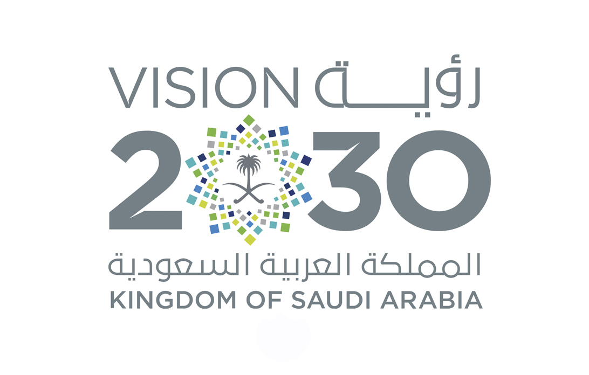

العودة
رؤية 2030

من جهته أشار وزير الاتصالات وتقنية المعلومات المهندس عبدالله عامر السواحة الى "أن انعقاد المؤتمر في الرياض
يمثل خطوة كبيرة تندرج لدعم رؤية 2030، والتي أفردت مساحة كبيرة لدعم قطاع تقنية المعلومات،
وقال: "إن رعاية الوزارة للمؤتمر والمعرض، تؤكد دعمها الفِكر الابداعي والابتكاري لتحفيز
الشباب على تحويل أفكارهم إلى أعمال وأنشطة تساهم في جهود التنمية".
وتسعى وزارة الاتصالات وتقنية المعلومات لتحويل المملكة إلى نافذة لتطبيقات انترنت الأشياء في
المنطقة، وبحث أفضل السبل للوصول الى ذلك من خلال نقل الخبرات العالمية وتيسير الحصول
على التمويل المناسب، وبخاصة أن المملكة تمتلك فرصا كبيرة في تطبيقات إنترنت الأشياء،
على اعتبار أن هذا السوق لا يزال في طور النمو، وأكد السواحة أن هناك وفرة من الكفاءات البشرية السعودية،
والباحثين، والمطورين المتقدمين في في هذا المجال.
وذكر وزير الاتصالات وتقنية المعلومات، أن الاقتصاد العالمي سيتأثر بشكل كبير في الفترة المقبلة بتكنولوجيا
إنترنت الأشياء التي أحدثت ثورة جديدة في عالم الإنترنت وتطبيقاتها، والتي ستدخل مختلف مناحي الحياة من
"زراعة، وصناعة، وصحة، وتعليم، ونقل وغيرها"، الأمر الذي سينعكس على تطور حجم الاستثمارات المقبلة للمملكة.
وتعمل وزارة الاتصالات وتقنية المعلومات، على حل جميع التحديات التي تواجه تقنية انترنت الاشياء
من خلال العمل مع مختلف الجهات المعنية، من أجل توفير بيئة آمنة لها وما يتعلق بها، من خلال تصميم
بنية تحتية ملائمة لمنع عمليات الاختراق والعبث في الأجهزة، إضافة إلى توفير الإمكانات لمعالجة وتخزين
واسترجاع البيانات الناشئة من الأجهزة والتعامل معها.
واعتبر السواحة أن الوزارة تتولى الإشراف على واحد من أهم القطاعات الداعمة للتحول الذكي، وهو قطاع
الاتصالات الذي يوصف بأنه الجهاز العصبي للمدينة الذكية،
وقال: "إننا نعمل لضمان أن يكون هذا الجهاز فاعلاً ونشطاً ومستجيباً لمتطلبات المشاريع العملاقة في هذا المجال".